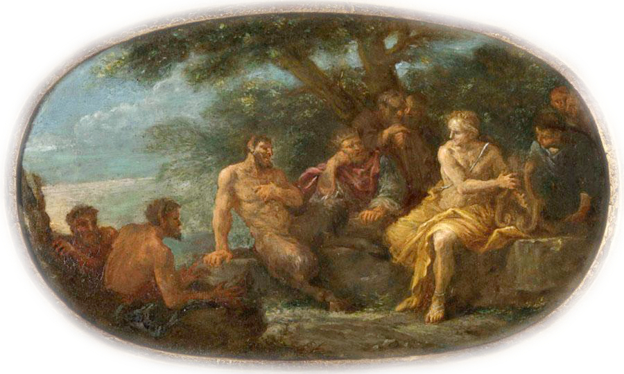
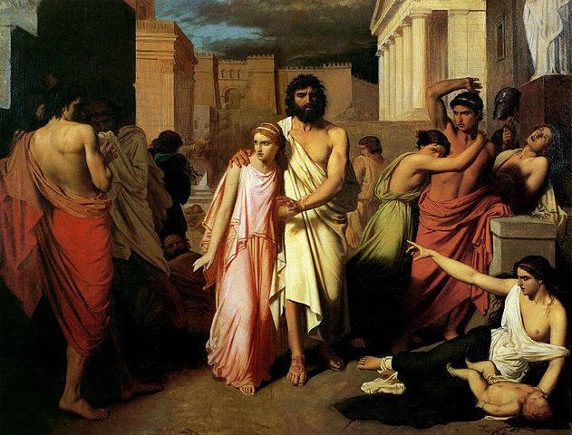

Culture | Greece
The Myth of Oedipus
Published: March 3 2021
Written by: Marzia Baquri
An in-depth review of the different versions of Oedipus' myth.
Introduction
The myth of Oedipus is a famous piece of Boeotian heritage: he was a mythic (and potentially actual) king of Thebes. It tells the tale of a troubled man and has been recounted in many different versions. This elaborate article goes over some of these iterations and stands still at particularly interesting parts of Oedipus’ myth.
The story of Oedipus is so fascinating that it has captivated people throughout centuries and has been famously used by Sigmund Freud (1856-1939) in his theories on psychoanalysis. But who was Oedipus, and why have his myths become famous?
{kind=link}
In Greek mythology, Oedipus was a king of Thebes (Beotia, central Greece), who had unknowingly committed patricide and married his mother, which led to various consequences such as woes and sorrow. There is however, more to the myth than that. It is a story of a man who set out to solve the problems plaguing his country, but ended up uncovering unpleasant mysteries surrounding his own life.
Sources for the myth of Oedipus
As with most ancient myths, there is no single version of the Oedipus myth. While the core aspects of the myth remained the same, the myth varied, depending on the source. Many sources elaborated the myth.
The myth of Oedipus existed during the archaic period(650 B.C. to 480 B.C.). However, the evidence is very scanty. Homer made a reference to Oedipus in his Odyssey, where he wrote about the woes of Oedipus. The hero, Odysseus meets Epikaste (Oedipus' mother) in the underworld, who gives an account of the tragedy that befell her and Oedipus.¹
In the classical period, the Oedipus myth was explored mostly through plays. Euripides's play, The Phoenissae (The Phoenician women) was written in the fifth century BCE. It was a play similar to Seven Against Thebes, written by Aeschylus another contemporary playwright. At the beginning of The Phoenissae, Jocasta narrates how Oedipus came to be the king of Thebes. She refers to Oedipus' fate with pity and contempt. However, much of the story focuses on the woes which passed down from Oedipus to his sons.
Sophocles was another contemporary playwright to Euripides. His famous tragic plays, Oedipus Tyrannus and Oedipus at Colonus have arguably come to define the myth itself. In Oedipus Tyrannus (often called Oedipus Rex), Oedipus sets out to find the murderer of his father. Oedipus at Colonus is a play about Oedipus' time as an exile at Colonus, the city where he finally dies.
{kind=link}
Another source is Library, a work traditionally ascribed to Apollodorus of Alexandria who lived in the second century B.C.E. The authorship is now contested, with some scholars claiming Library was written in the second century C.E. This work is a collection of myths taken from Greek plays and epics.
There are other works, including a fragment of a play by Euripides, called Oedipus, and fragmentary epics, the Oedipodeia and Thebaid.
The Beginning
Oedipus was born the king of Laius and Jocasta (or Epikaste by Homer). In Euripides' The Phoenissae, Jocasta narrates that Laius was warned his son would kill him:
"But the god(Apollo) said: 'Lord of Thebes famous for horses, do not sow a furrow of children against the will of the gods; for if you beget a son, that child will kill you, and all your house shall wade through blood.' "²

The God Apollo
Being the god of light, Apollo is painted as the brightest figure in this scene.
The prophecy set a chain of events, eventually leading Oedipus to commit the crimes it was foretold he would commit. It began with Oedipus' birth. Laius did not heed the warning and Jocasta ended up birthing him. Oedipus was left exposed at the top of Mount Kithaeron and his ankles were pierced with iron spikes. According to tradition, the reason behind the name 'Oedipus' is his swollen feet.³ He did not die, however, and was adopted by King Polybus of Corinth.
When older, as he later recounts in Oedipus Tyrannus, Oedipus had received a warning from the oracle at Delphi about his future crimes.4 He left his home, Corinth, to avoid that fate. In his journey, he encountered Laius and killed him in a confrontation, unaware that Laius was his father. He took Laius' chariot and presented it to his foster-father. Coincidentally, Laius had been on his own journey to confirm whether Oedipus had really died when he had left him exposed.
Oedipus' encounter with the Sphinx
{kind=link}
Oedipus' encounter with the Sphinx was a significant part of the myth and has been the subject of many works of art.5 The Sphinx was a creature whose portrayal was heavily influenced by eastern myths. She was a creature who "had the face of a woman, the breast and feet and tail of a lion, and the wings of a bird".6 She had been ravaging the city of Thebes after the death of its king, Laius. Jocasta's as well as the city of Thebes would belong to the person who solved the riddle posed by the Sphinx.
The riddle was this:
"What is that which has one voice and yet becomes four-footed and two-footed and three-footed?"7
Oedipus's answer was: human. A human crawls on feet and hands when a toddler, then learns to walk on two feet; in old age, a human relies on a walking stick, which functions as a third leg.
The Sphinx left and Oedipus became the king of Thebes. He also, unwittingly, married his mother.
Oedipus' investigation into the murder of Laius
The Sphinx had left. Nevertheless, the city of Thebes continued to suffer, and this time, from plague. Sophocles' Oedipus Tyrannus is our main source for this part of the myth.
According to the myth, Oedipus was told that the plague would only end when he found the person who murdered Laius. In his attempt to seek the murderer, he summoned Teiresias, the blind old seer who knew the murderer.
Teiresias accused Oedipus of being the murdered, and argued that while he was blind, he could see what Oedipus, despite having sight, could not.
"And I tell you, since you have taunted my blindness, that though you have sight, you do not see what a state of misery you are in, or where you dwell, or with whom. Do you know who your parents are? You have been an unwitting enemy to your own kin, both in the Underworld and on the earth above, and the double lash of your mother's and your father's curse will one day drive you from this land in dreadful haste, with darkness upon those eyes of yours which now can see."8
{kind=link}
Teiresias also predicted Oedipus' fate before exiting the scene: "A blind man, though now he sees, a beggar, though now rich, he will make his way to a foreign land, feeling the ground before him with his staff. And he will be discovered to be at once brother and father of the children with whom he consorts; son and husband of the woman who bore him; heir to his father's bed, shedder of his father's blood.9
Thoroughly vexed by Teiresias, and in disbelief over his accusations, Oedipus continued to investigate the murder.
In the course of his investigation, Oedipus and Jocasta discussed the warnings Jocasta had received as well as the warnings Oedipus himself had received about his fate. The investigation led him to uncover the mysteries surrounding his parentage. He found that he was not the true son of King Polybus and his wife Merope, and his insistence on digging deeper into his parentage, agonised Jocasta.
Oedipus and Jocasta finally realised that Oedipus was indeed Laius' and Jocasta's son and that he had committed the actions the oracle had warned he would.
The fate of Oedipus and Jocasta
The fates of Oedipus and Jocasta are the same in all versions of the myth. There are however, a few differences. In Homer's version of the myth, as well as in Oedipus Tyrannus, Jocasta committed suicide immediately after finding out that she had married her son. She perished "by her own hand", "hanging by the neck in a twisted noose of swinging cords".10 However, in Euripides' The Phoenissae, Jocasta continued to reside in the palace while suffering from the woes that were passed to her and her sons from Oedipus. She committed suicide much later, after her sons killed each other in conflict.
Meanwhile, Oedipus blinded himself in all versions of the myth. He was no longer the saviour of Thebes; rather, an outcast who had committed terrible crimes, albeit inadvertently. In The Phoenissae, Jocasta tells the audience that Oedipus was put behind bars within the palace, and away from the public. He was to be forgotten. However, he resented that, and cursed his sons and prayed that they would be against each other. Towards the end of the play, he was banished and went into exile with his daughter, Antigone. Sophocles also presents the same fate for Oedipus in Oedipus Tyrannus. The difference is that, in Oedipus Tyrannus he goes immediately into exile after discovering his crimes. Exile was a well-known punishment for political prisoners as well as those convicted of murder in many ancient Greek city-states. Therefore, Oedipus' fate reflects the fate of a criminal. Sophocles' other play, Oedipus at Colonus, tells the rest of Oedipus' story and his sorrowful end. Oedipus found himself at Colonus, an unfamiliar city, led by his daughter Antigone. A blind old man filled with sorrow, he decided Colonus would be his resting place.
Oepidus and Antigone by Charles Jalabert (1842)
The myth of Oedipus underwent many variations as it served different functions. In Homer's epic, The Odyssey, the fate of Oedipus was intended to be a moral message about how to not take the throne. While he would have been received by the ancient Greeks as sinful because of his actions, he would also have been perceived as a tragic hero, whose actions were determined by the gods. He was a man who was predestined to suffer. This is nowhere more evident than in the tragic plays written by Euripides and Sophocles, which were created to astound and entertain the audience. As such, they heavily dramatised Oedipus' fate, and depicted him as a tragic hero. Despite the variations, the myth of Oedipus is undeniably fascinating and tragic.
Bibliography:
- 1. Apollodorus, Library, Frasier, J.G. (ed)
- 2. Euripides, The Phoenissae, Coleridge, E.P (ed)
- 3. Homer, Odyssey , Butler, S. (ed)
- 4. Sophocles, Oedipus Tyrannos, Jebb, R. (ed)
Further reading (secondary sources):
- 5. Bremmer, J(1988) "Oedipus and the Greek Oedipus Complex" in Bremmer, J (ed) Interpretations of Greek Mythology, London: Routledge
- 6. Buxton, R(2007) "Tragedy and Greek Myth" in Woodard, R. (ed) The Cambridge Companion to Greek Mythology, New York: Cambridge University Press
- 7. Edinger, E.(1994) The Eternal Drama: The Inner Meaning of Greek Mythology, edited by Welsey, D( 1st edn), Boston: Shambhala
- 8. Lowell, E.( 2006) Oedipus, Routledge (online)
- 9. Kirk, G.S. (1974) The Nature of Greek Myths, Penguin books
- 10. Vellacott(1964) "The Guilt of Oedipus", in Greece and Rome, 11(2) pp 137-148